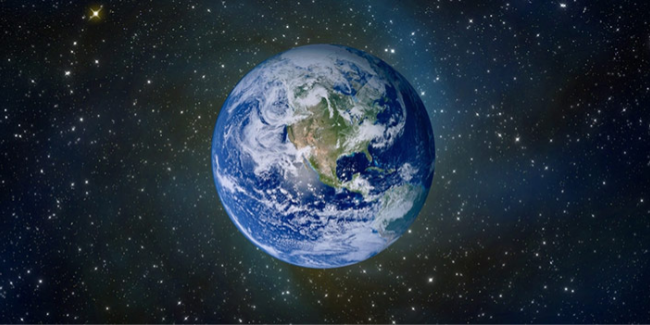
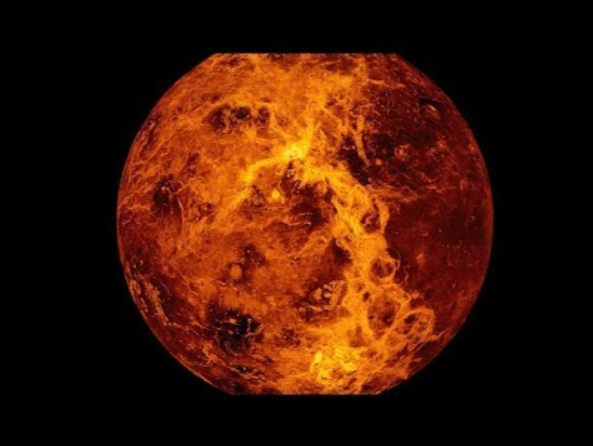

Planets around the Sun, Venus and Earth, information about it
დედამიწა მზის სისტემიდან მესამე პლანეტაა. იგი უდიდესია დედამიწის ტიპის პლანეტებს შორის და სამყაროში ცნობილი ერთადერთი ადგილია, რომელიც დასახლებულია ცოცხალი არსებებით. დედამიწის ზედაპირის უდიდესი ნაწილი წყალს უკავია, მის გარშემო კი ჰაერის გარსი- ატმოსფეროა. 2018 წლის ბოლო მონაცემებით დედამიწაზე 7,6 მილიარდი ადამიანი ცხოვრობს. დედამიწის წარმოშობაზე პირველ მოსაზრებებს ჯერ კიდევ ძველი ბერძნები გამოთქვამდნენ, თუმცა ეს მოსაზრებები მეცნიერულად დასაბუთებული …
ვენერა მეორე პლანეტაა მზიდან და მას ხშირად დედამიწის დობილს უწოდებენ, რადგან ორივე ციური სხეული ერთმანეთს საკმაოდ ემსგავსება სიდიდითა და შემადგენლობით. პლანეტას რომაელი სიყვარულის ქალღმერთის ვენერას სახელი ჰქვია. ვენერა დედამიწას ყველა სხვა პლანეტაზე მეტად უახლოვდება ხოლმე. მას ეძახიან "მწუხრის ვარსკვლავსაც" და "ცისკრის ვარსკვლავსაც", რადგან მისი დანახვა ხან დაისის შემდეგ შეიძლება, ხან განთიადის წინ. იგი იმდენად ნათელი …
